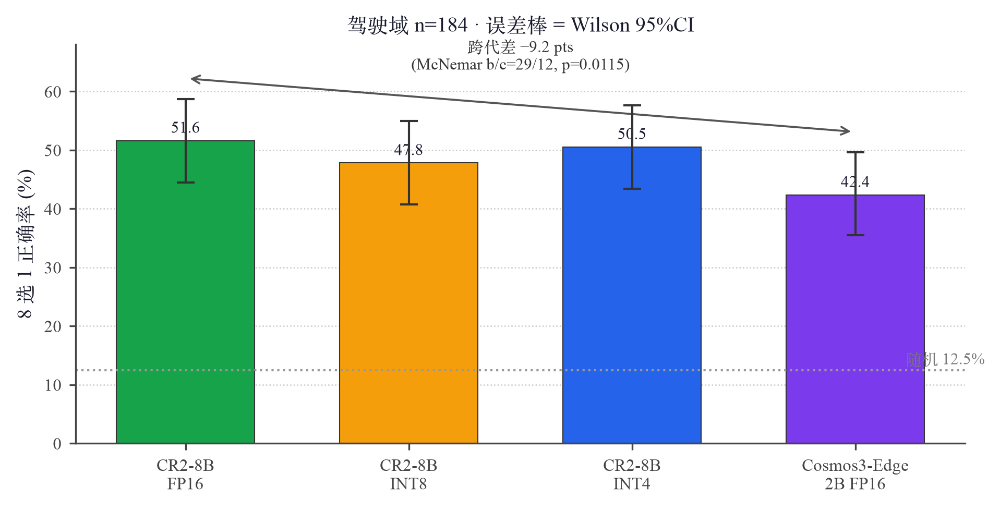
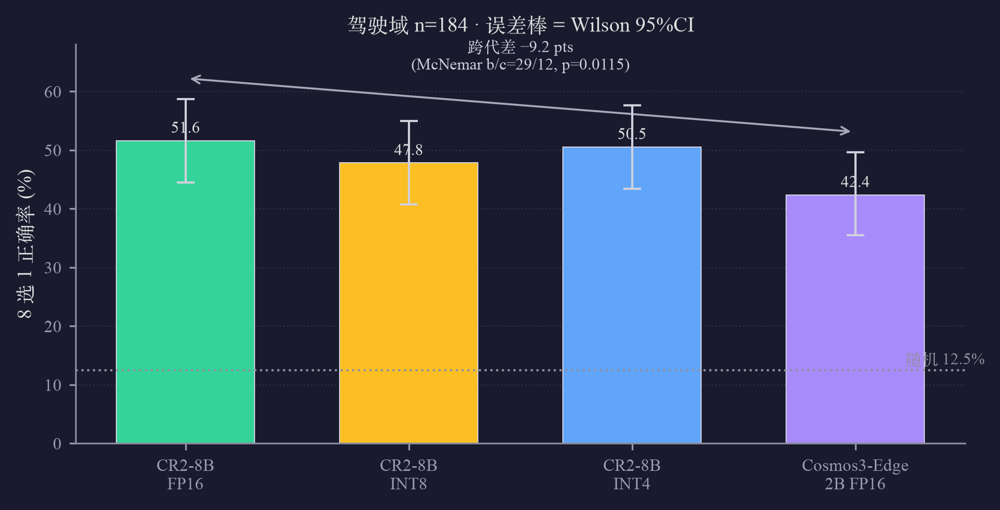

🎬 在线 Demo · Cosmos3-Edge 2B 驾驶场景理解（真实 Orin 推理输出）
alpamayo-edge 仓用一套 TensorRT-Edge 管线部署多代 NVIDIA Physical AI 模型。把同一把尺子（自建驾驶域基准 n=184，同帧、同题、同标答）量到两代 reasoner 上——上一代 Cosmos-Reason2-8B 与新一代 Cosmos3-Edge 的 2B VL reasoner——做跨代精度对比，验证「缩小模型不免费、量化几乎免费」这一部署策略结论是否在第二个模型家族上成立。零预算 · 零训练 · 全 Orin。
本页是跨代精度对比专篇，与 Cosmos3-Edge 的其余证据同仓：部署细节（六道 JetPack 6.2 兼容墙、分解注意力/RoPE 补丁、动作表示）见 docs/DEPLOYMENT.md，policy 动作链（DROID 机器人操作）见 eval/policy/。第一阶段（CR2-8B 量化部署，图 1–21 / 表 1–13）见 CR2-8B 量化部署。
协议与 alpamayo-edge 主页 §1.11/§1.12 完全一致（同帧、同题、同标答、贪心、cap 12、6 帧 @448），唯一变量是模型。输入直接复用 bench/ood_eval/ood_input_goat.json（messages 格式模型无关，runtime 用引擎目录内自己的 chat template）。打分复用同一套解析 / Wilson CI / McNemar 实现，故与 CR2-8B 各档方法学逐位可比。


eval/cosmos3/cosmos3_viz.py 从原始输出重算（Cosmos3 k=78/184、unparsed=0），非手填。| 模型 | 正确率 | Wilson 95%CI | vs CR2-8B FP16 | E2E/请求 |
|---|---|---|---|---|
| CR2-8B FP16（goat） | 51.6% | [44.5, 58.7] | — | ~1.2 s |
| CR2-8B INT8（dog） | 47.8% | [40.7, 55.0] | −3.8 pts（p=0.143 ns） | 0.50 s |
| CR2-8B INT4（dog） | 50.5% | [43.4, 57.7] | −1.1 pts（p=0.815 ns） | 0.68 s |
| Cosmos3-Edge 2B FP16（goat） | 42.4% | [35.5, 49.6] | −9.2 pts（b/c=29/12，p=0.0115 显著） | 0.91 s |
| 184/184 全 EOS、零解析失败、字母分布均衡（A17 B22 C20 D23 E29 F26 G19 H28，无坍缩）。引擎：FP16，llm 3.7G + visual 940M（分解注意力版）。 | ||||
Cosmos3-Edge 的部署打通（六道 JetPack 6.2 兼容墙、分解注意力/RoPE 补丁）见本仓 docs/DEPLOYMENT.md；policy 动作链（DROID 机器人操作，部署打通 + conditioning 弱耦合边界）见 eval/policy/。